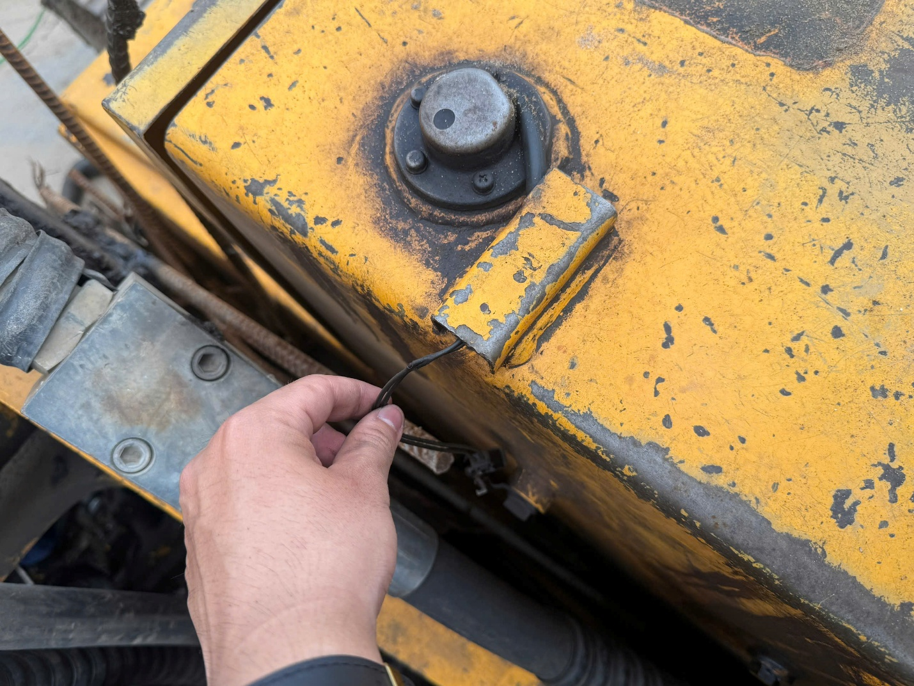

01 / FIELD INVESTIGATION
Start from the real machine.
ROBEX and HAMM surveys establish operating environment, access, routing, contamination and service constraints before an installation concept is proposed.
- Document whole-machine and interface context
- Identify packaging and maintenance constraints
- Record what still requires measurement